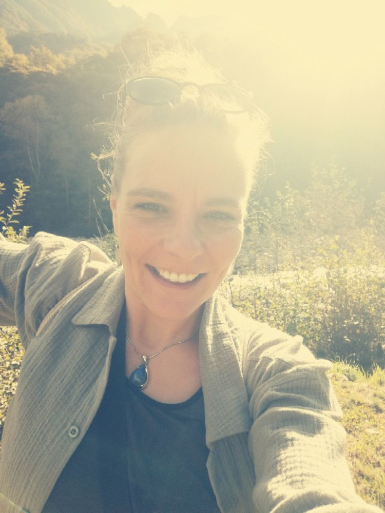

01
Kroppen
Spänningar minskar. Cirkulation och rörlighet får mjukna. Kroppens egen återhämtning stimuleras längs längdaxeln.
Kraniosakral terapi
Att landa. Hitta riktningen. Släppa taget.
En trygg plats där du får återknyta kontakten med kroppen — utan att något ska skyndas på, korrigeras eller tvingas fram.
Kraniosakral terapi (CST) växer ur osteopatin. Genom varsam, nästan viktlös beröring får det kraniosakrala systemet — skalle, korsben, hinnor och cerebrospinalvätska — utrymme att återfinna sin rytm.
Spänningar minskar. Cirkulation och rörlighet får mjukna. Kroppens egen återhämtning stimuleras längs längdaxeln.
Stoicismen påminner: skilj på det du kan påverka och det du inte kan. Uppmärksamheten och nästa steg är alltid dina.
Som i bågskyttet: hitta stadgan, rikta in dig, håll spänningen — och ha modet att släppa taget. Pilen flyger själv.
Find it, fix it, leave it alone.Dr. Andrew Taylor Still
Tålamod är det viktigaste verktyget. Mindre kraft kan leda till djupare förändring.
Ingen mekanisk korrigering. En dialog med vätskekroppen, i stillhet och lyhördhet.
Fokus på balansen i hela det centrala nervsystemet — inte enbart den plats där smärtan hörs först.
Jag öppnar utrymmet och finns där som stöd. Kroppen bär redan förmågan att hitta tillbaka.
Inte att tala om för dig hur du ska vara — utan att stödja dig i att återfinna din egen riktning.
Uppmärksamhet och öppet sinne. Lyssna med händer och lyhördhet — inte bara med öronen.
Vad känner jag? Vad behöver jag? Var håller jag fast? Var kan något få mjukna?
Varje människa går sin egen väg. Terapeuten håller rummet — du bär stegen.
Allt behöver inte lösas på en gång. Ibland uppstår rörelse just när vi slutar tvinga fram den.
Är jag närvarande? I balans? Hjälper spänningen mig framåt — eller håller jag för hårt?
Det avgörande ögonblicket är inte att hålla fast, utan att våga lita på processen.

Lynn utbildar sig till kraniosakral terapeut och bygger en praktik där kroppen, stoisk klarhet och bågskyttets bildspråk möts — jordnära, skolad, och med grönt som ledmotiv.
Hon vill erbjuda en skyddad plats att landa i: där subtila signaler får höras, och där hälsa ibland handlar mindre om att vara fri från spänning — och mer om att kunna känna den utan att gå vilse.
»Jag hittar min riktning — utan att låsa mig vid den. Jag håller utrymmet öppet — och släpper taget.«
När praktiken öppnar bokas möten här. Just nu är detta en förhandsvisning — kontaktuppgifter och tider fylls i när Lynn är redo.
Skriv till LynnPlaceholder-länk · byt till bokning / telefon när du vill